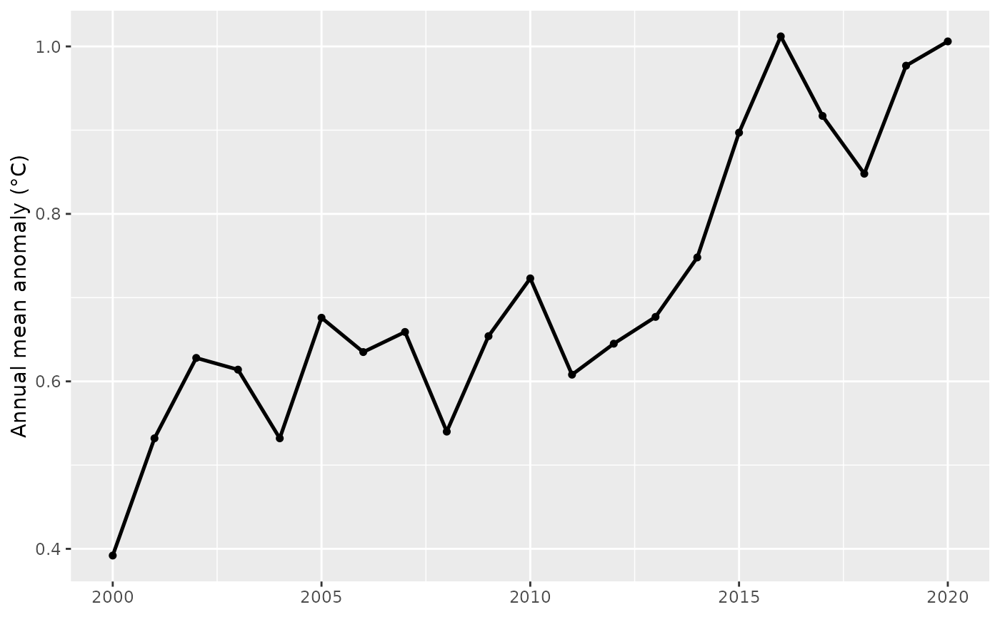
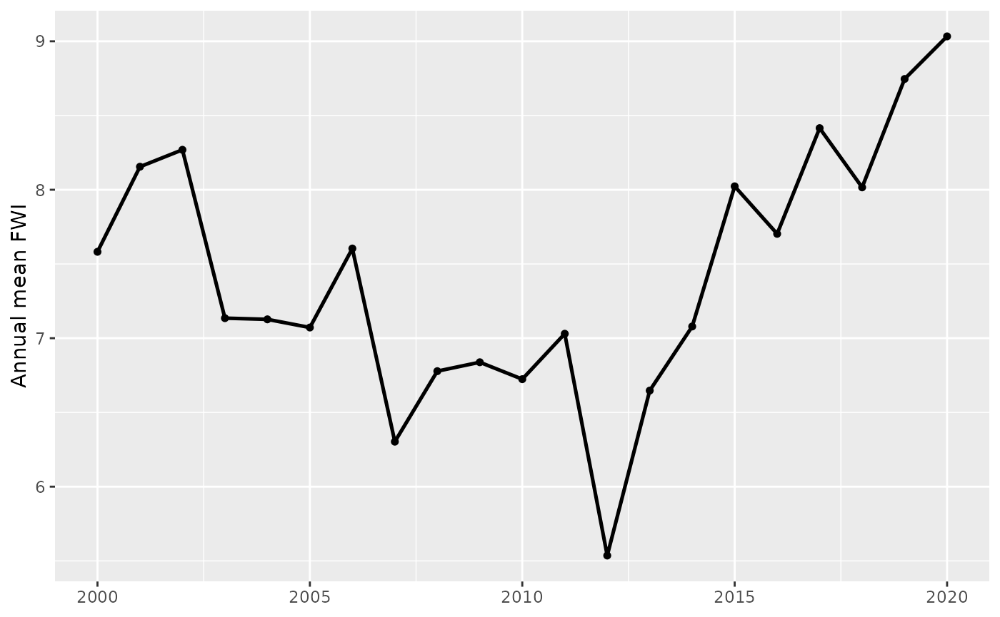

Overview
ausbushfire provides two teaching datasets and a Shiny
app to interactively explore meteorological context relevant to
Australian bushfires.
climate_data: monthly global temperature anomalies (°C).fwi_synthetic: monthly Fire Weather Index (FWI) (synthetic/demo).
It also provides small helper functions for quick analysis:
calculate_statistics()— descriptive statistics within a year rangeannual_trends()— yearly mean/max/min time seriesextreme_events()— yearly counts/frequency beyond a threshold
The package ships an interactive app launched by
run_ausbushfire_app().
Datasets
Climate_data
data("climate_data", package = "ausbushfire")
dplyr::glimpse(climate_data)
#> Rows: 1,748
#> Columns: 5
#> $ Year <int> 1880, 1880, 1880, 1880, 1880, 1880, 1880, 1880, 18…
#> $ Month <fct> Jan, Feb, Mar, Apr, May, Jun, Jul, Aug, Sep, Oct, …
#> $ Temperature_Anomaly <dbl> -0.19, -0.25, -0.09, -0.16, -0.10, -0.21, -0.18, -…
#> $ Date <date> 1880-01-15, 1880-02-15, 1880-03-15, 1880-04-15, 1…
#> $ Quarter <chr> "Q1", "Q1", "Q1", "Q2", "Q2", "Q2", "Q3", "Q3", "Q…Key columns:
Year(integer),Month(abbrev: Jan–Dec),Date(mid-month Date)Quarter(“Q1”–“Q4”)Temperature_Anomaly(°C)
Fire Weather Index (synthetic)
data("fwi_data", package = "ausbushfire")
dplyr::glimpse(fwi_data)
#> Rows: 1,511
#> Columns: 5
#> $ Year <int> 1900, 1900, 1900, 1900, 1900, 1900, 1900, 1900, 1900, 1900, 19…
#> $ Month <fct> Jan, Feb, Mar, Apr, May, Jun, Jul, Aug, Sep, Oct, Nov, Dec, Ja…
#> $ FWI <dbl> 4.99, 5.72, 9.30, 12.51, 9.53, 9.00, 11.16, 7.53, 3.06, 3.62, …
#> $ Date <date> 1900-01-15, 1900-02-15, 1900-03-15, 1900-04-15, 1900-05-15, 1…
#> $ Quarter <chr> "Q1", "Q1", "Q1", "Q2", "Q2", "Q2", "Q3", "Q3", "Q3", "Q4", "Q…Key column:
-
FWI(numeric). Example banding: 0–5 (Low), 5–15 (Moderate), 15–30 (High), 30+ (Extreme)
Quick descriptive statistics
# Temperature anomaly stats for 2000–2020
calculate_statistics("climate", 2000, 2020)
#> # A tibble: 1 × 10
#> Dataset Period N N_non_missing Mean Median SD Min Max IQR
#> <chr> <chr> <int> <int> <dbl> <dbl> <dbl> <dbl> <dbl> <dbl>
#> 1 climate 2000-2020 252 252 0.71 0.7 0.201 0.24 1.36 0.25
# FWI stats for 2000–2020
calculate_statistics("fwi", 2000, 2020)
#> # A tibble: 1 × 10
#> Dataset Period N N_non_missing Mean Median SD Min Max IQR
#> <chr> <chr> <int> <int> <dbl> <dbl> <dbl> <dbl> <dbl> <dbl>
#> 1 fwi 2000-2020 252 252 7.42 7.28 3.36 0 15.6 4.86Annual trends
clim_annual <- annual_trends("climate", 2000, 2020)
ggplot(clim_annual, aes(Year, Annual_Mean)) +
geom_line(linewidth = 0.9) +
geom_point(size = 1.3) +
labs(x = NULL, y = "Annual mean anomaly (°C)")
fwi_annual <- annual_trends("fwi", 2000, 2020)
ggplot(fwi_annual, aes(Year, Annual_Mean)) +
geom_line(linewidth = 0.9) +
geom_point(size = 1.3) +
labs(x = NULL, y = "Annual mean FWI")
Extreme events
Use thresholds appropriate to each variable.
Temperature anomalies: e.g.
> 1.0 °CFWI: e.g.
>= 10
ext_clim <- extreme_events("climate", threshold = 1.0, comparator = ">", start_year = 2000, end_year = 2020)
ext_fwi <- extreme_events("fwi", threshold = 10, comparator = ">=", start_year = 2000, end_year = 2020)
par(mfrow = c(1,2))
plot(ext_clim$Year, ext_clim$Extreme_Frequency, type = "b",
xlab = "Year", ylab = "Frequency", main = "Anomaly > 1°C")
plot(ext_fwi$Year, ext_fwi$Extreme_Frequency, type = "b",
xlab = "Year", ylab = "Frequency", main = "FWI ≥ 10")Launch the Shiny app
You can use the run_ausbushfire_app() command to run the
Shiny app. The app uses only package datasets (no read.csv), provides
interactive controls to explore monthly/quarterly/yearly structure, and
includes brief guidance notes on interpretation.